Ebben a dokumentumban az nkp-n található Hulladékgazdálkodás feladat részletes, lépésenkénti megoldását találod. A szükséges fájlok mind csatolva vannak és letölthetők ugyanúgy, mint az nkp-ról. Az eredeti feladatot és a hozzá tartozó leírást itt találod. Az én csatolmányom ettől annyiban különbözik, hogy van benne még egy Word-dokumentum is, amely az én órai munkám, vagyis ebben megvannak azok a dolgok, amiket közösen csináltunk. Ha a dokumentum alapbeállításait, a stílusok alkalmazását és módosítását már magabiztosan tudod, akkor dolgozhatsz abba, de kezdheted elölről is, hogy többet gyakorolj. Ha az órai munkát szeretnéd folytatni, AZ ELSŐ PONT, A LETÖLTÉS ÉS KICSOMAGOLÁS UTÁN ugorj a Lábjegyzet és a források megjelölése lépéshez! A tömörített mappát ide kattintva töltheted le.
Tömörített mappa letöltése és a fájlok kicsomagolása
Önálló feladat
Töltsd le a tömörített mappát, nyisd meg és bontsd ki a tartalmát! Kicsomagolás után alapértelmezés szerint megnyílik a kibontott fájlokat tartalmazó mappa. Fontos, hogy innentől ezekkel dolgozz, ne a tömörített mappában levőkkel, mert akkor nem fog minden megfelelően működni!
Részletes leírás lépésenként
Letöltés és kicsomagolás: kattints a fenti linken a tömörített mappa letöltéséhez! A letöltéseket általában a böngésző jobb felső részében ikon jelzi. Ha erre kattintasz, meg tudod nyitni a letöltött fájlt, de ha simán megnyitod a Fájlkezelőt, a Kezdőképernyő nevű (eredetileg megnyíló) nézetben alul, a fájlok közt is a letöltésed kell, hogy az első legyen.
A tömörített mappa olyan, mint egy dobozba csomagolt telefon. Könnyebb szállítani becsomagolva, de nem tudod használni – általában. Ahhoz, hogy minden megfelelően működjön, a tömörített mappát ki kell csomagolni. Megnyitás után (Windows 11-ben) csak annyi különbözteti meg látszólag egy sima mappától, hogy a menüsorban szerepel egy Az összes kibontása opció is.
Erre kattintva ki kell választani, hogy hova szeretnéd kibontani a tömörített mappát, vagyis, hogy hova pakolod ki a tartalmát. A legegyszerűbben a Tallózás gombra kattintva keresheted ki a mentés helyét. A megnyíló ablakban, mint bármyilyen mentéskor, ki tudod keresni bal oldalon az Ez a gép (vagy OTTHON a Dokumentumok) tárolót, majd a (saját felhasználóneved) H: meghajtót. Arra kell figyelni, elsősorban az iskolában, hogy ez olyan hely legyen, ahová tudsz írni, tehát a Munka meghajtó HELYETT választd mondjuk a saját H: meghajtódat!
Ha ezekkel végeztél, érdemes bezárni a tömörített mappát – amelyiknek a tetején látod azt, hogy Az összes kibontása, így nem fogod véletlenül összekeverni azzal, amelyiknek a dolgaival tudsz is dolgozni.
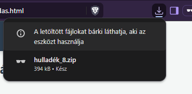
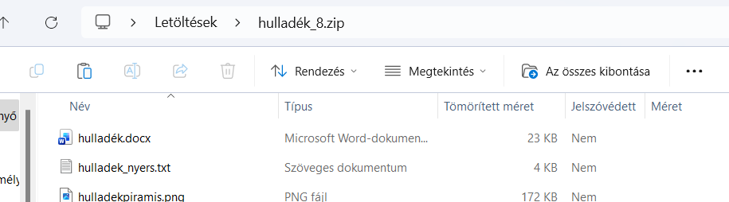
Dokumentum készítése, szöveg beillesztése, alapbeállítások
Önálló feladat
Nyisd meg a hulladek_nyers.txt fájlt, másold ki innen a szöveget és illeszd be egy üres Word-dokumentumba! Mentsd el a munkádat hulladék néven otthon a Dokumentumokba, a suliban a saját H: meghajtódon készített évfolyammappába!
A teljes dokumentumban állítsd a betűméretet 12 pontosra, a betűtípust Calibrire, a térközt mindenhol 0 pontosra, a sorközt szimplára, illetve a teljes dokumentum legyen sorkizárt! Kapcsold be az automatikus elválasztást!
Részletes leírás lépésenként
Nyers szöveg megnyitása, kijelölése és másolása: a kibontott mappában (NEM a tömörítettben!) nyisd meg a hulladek_nyers.txt szöveges dokumentumot! Ne zavarjon, hogy melyik program nyitja meg: amíg el tudod olvasni a tartalmát, addig a számítógép is el tudja!
Jelöld ki a teljes szöveget (ctrl + a), majd másold le (ctrl + c)! Látható változás ekkor nem történik, de a szöveg a Vágólapra kerül, ahonnan majd be tudod illeszteni.
A Vágólap (angolul Clipboard) egy átmeneti tároló, amelybe a ctrl + c vagy a ctrl + v billentyűkombinációval juttathatok adatot. Lényegében bármi kerülhet ide: szöveg, kép, egy teljes fájl... A cél helyre a ctrl + v billentyűkombinációval illesztheted be a vágólap tartalmát. Windows 11 alatt be lehet kapcsolni, hogy a Vágólap ne csak egy, hanem sok adatot tartalmazhasson. Ilyenkor a ctrl + v a legutóbbi elemet illeszti be, ahogyan megszokhattuk. Ha korábbi elemeket keresnél, akkor a 🪟 + v (Windows + v) billentyűkombinációval keresgélhetsz az előzmények között.
Üres dokumentum készítése, beillesztés és mentés a megfelelő helyen: nyisd meg a Word-programot (Start menü → Word ) és hozz létre egy új dokumentumot! Illeszd be a vágólap tartalmát (ctrl + v). Mentsd a dokumentumot a megfelelő helyre!
A megfelelő hely a saját hálózati meghajtódban az évfolyammappa, vagy ha otthon csinálod a feladatot, a Dokumentumok mappa.
A betűtípus beállítása: a feladatleírás szerint kell beállítani a betűtípust és a bekezdéseket. Ehhez először jelöld ki a teljes szöveget (ctrl + a). Az alap beállításokat a Kezdőlap fülön találod. A betűtípust állítsd 12 pontos Calibri típusúra! A bekezdések részben állítsd be, hogy minden szöveg Sorkizárt legyen!
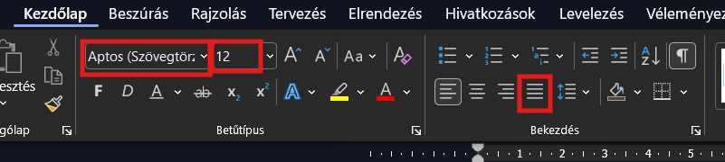
A bekezdés beállításai: a térközöket és a sorközöket, bár máshol is lehet, a legegyszerűbb talán a Kezdőlap fül Bekezdés szekciójában található Beállítások megnyitása gombra () kattintva beállítani. Állíts minden térközt (előtte és utána is) 0 pontosra, és a sorközt is vedd szimplára!
Az elválasztás beállítása: a teljes dokumentumban kapcsold be az automatikus elválasztást! Ezt a beállítást az Elrendezés fül Elválasztás szekciójában találhatod.
Ha nem tudod, hol keress egy ilyet, akkor érdemes használnod a Word Keresés funkcióját. A menüszalag fölött találsz egy kis keresősávot. Ha ide beírod azt a beállítást, amit keresel általában kiadja anélkül, hogy meg kellene jegyezned, hogy hol is keresd az adott dolgot.
Címsorok beállítása
Önálló feladat
Állítsd be a címsorokat a dokumentumban. Azt, hogy melyik címsor milyen szintű, ide kattintva nézheted meg. A bal szélen levők a Címsor 1 stílusúak, az eggyel beljebb kezdődők Címsor 2, a számozott, legbeljebb kezdődők pedig Címsor 3 stílusúak. Állítsd be a címsorstílusokat az itt megadottak szerint!
Részletes leírás lépésenként
Címsorok alkalmazása: a szöveg egyes részei különböző szintű címsorok. A Címsor 1 a legfelső szintű címsor, a Címsor 2 a következő stb. Például Címsor 1 lenne a Kémia tankönyv címe. Címsor 2 lenne a fejezeteké, pl. Általános kémia vagy Atomszerkezet. Címsor 3 minden lecke címe, pl. Molekulák kialakulása. Címsor 4 pedig a lecke részeinek címe.
Az egyes címsorokat nagyon egyszerűen lehet beállítani. Csak jelöld ki a szöveget, és válaszd ki a kívánt címsor stílust egy bal kattintással a Kezdőlap fül Címsorok szekciójában. Gyorsabban is beállíthatod ezeket a címsorokat. Mivel a teljes bekezdésre hatnak, elég, ha a kurzor valahol a címsor bekezdésében villog, nem kell kijelölni. Ezekhez a stílusokhoz be vannak állítva gyorsbillentyűk: a Címsor 1-hez használhatod az Alt + 1, a Címsor 2-höz az Alt + 2 stb. gombokat. Azt, hogy melyik címsor milyen szintű, ide kattintva nézheted meg. A bal szélen levők a Címsor 1 stílusúak, az eggyel beljebb kezdődők Címsor 2, a számozott, legbeljebb kezdődők pedig Címsor 3 stílusúak.
Címsorok beállítása: a címsorok (és amúgy minden más stílus) kinézetét a stílusnál tudod módosítani. Ehhez kattints jobb egérgombbal a Kezdőlap fül Címsorok szekciójában arra a stílusra, amelyiket szeretnéd módosítani. A megjelenő Helyi menüben válaszd ki a Módosítás lehetőséget. A megjelenő párbeszédablakban tudod módosítani a címsorstílusokat. Állítsd be a címsorstílusokat az itt megadottak szerint!
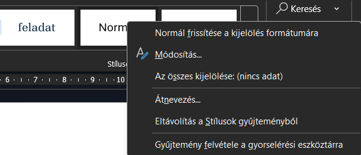
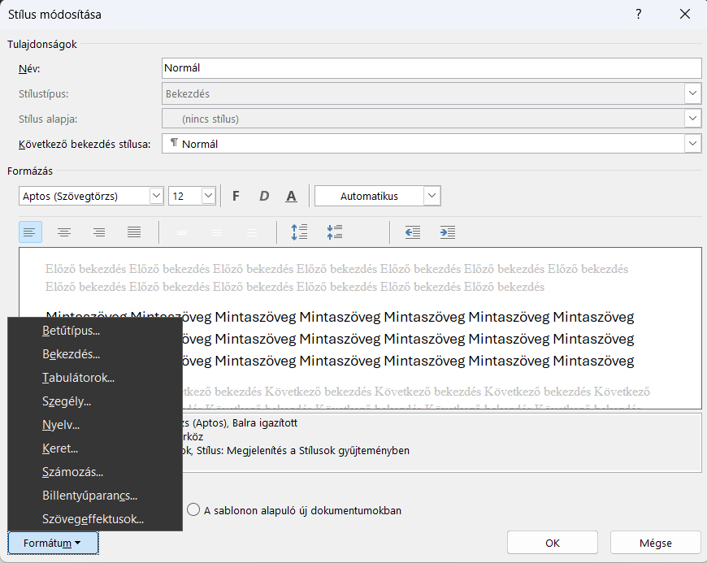
Formátum gombra kattintva tudod beállítani. A pirossal keretett részben választhatod ki, hogy a betűtípust, a formátumot vagy pl. a nyelvet szeretnéd-e módosítani. Ha végeztél, a zölddel keretett OK gombra kattintva tudod elmenteni a módosításokat.">
Hulladéktípusok és csoportosításuk
Nem minden hulladék szemét!
Hulladékok csoportosítása
Veszélyes hulladék
Virtuális szemét – SPAM
Hulladékcsökkentés
Szerves hulladék
Textilhulladék
Néhány anyag lebomlási ideje a természetben
Műanyaghulladék
Cserebere és javíttatás
Kösssz
Hulladékkezelés
Hulladékpiramis
1. Megelőzés
2. Újrahasználat
3. Újrahasznosítás
4. Égetés
5. Lerakás
Források
Behúzás és térköz fülön tudod beállítani az eddig említetteket, a Szövegbeosztás fülön pedig további dolgokat, pl. azt, hogy egy bekezdés mindig új oldalon kezdődjön vagy hogy az utána jövővel egy oldalra kerüljön.">
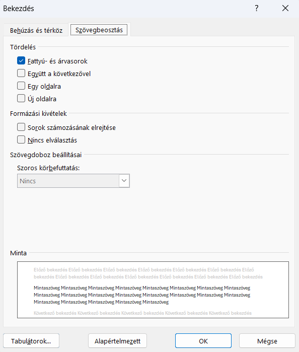
Élőfej és élőláb, oldalszám beillesztése
Az élőfej és az élőláb a dokumentum tetején és alján található, a szövegtől elkülönített rész. A dokumentum minden oldalán megjelenik, de a beállításoknak megfelelően lehetnek különbségek az egyes szakaszok tartalmában. Alapvetően olyan dolgokat szoktak ide írni, mint az oldalszám, a dokumentum (pl. könyv) címe, esetleg a szerző neve vagy az aktuális fejezetcím.
Önálló feladat
Nyisd meg az Élőfej és élőláb szerkesztését! Állítsd be, hogy az első oldal, és a páros és páratlan oldalak is eltérők legyenek!
Az élőfejbe kerüljön – az első oldal kivételével – az A hulladékokról szöveg! Az élőlábba (itt is az első oldal kivételével) az oldalszámot szúrd be, páros oldalakon balra, páratlanokon jobbra igazítva. Figyelj, hogy minden oldalon helyes legyen az oldalszám, az Oldalszám hivatkozást használd!
Részletes leírás lépésenként
Élőfej és élőláb megnyitása: legalább háromféleképpen teheted. Szerintem a legegyszerűbb, ha duplán valamelyik oldal tetejére vagy aljára kattintasz, oda, ahol már/még nincs szöveg.
A második módszer, ha a Beszúrás fülön kiválasztod az Élőfej (vagy az Élőláb) lehetőséget. Innen közvetlenül is be tudsz szúrni oldalszámot, ha ez a feladat.
A harmdaik módszer az örök megoldás, ha nem tudod, hol keress valamit: Csak írd be a keresés részbe a kívánt beállítást, és nagy eséllyel kapsz egy arra használható menüt.
Beállítások módosítása: pipáld be azokat e jelölőket, amelyekkel az első oldal eltérő és a páros és páratlan oldalak is eltérők lesznek! Ezeket a beállításokat az Élőfej és élőláb részben tudod módosítani.
Az élőfej tartalma: az élőfej és élőláb használatának előnye, hogy a megadott beállítások alapján automatikusan jelennek meg az összes oldalon. Két dologra kell emiatt figyelni, az első már az élőfejben megjelenik.
Mivel beállítottuk, hogy az első oldal élőfeje másmilyen legyen, mint a többi, ezért ezt üresen tudjuk hagyni. Mivel viszont a páros és páratlan oldalak is eltérők, egy páros és egy páratlan oldalon is be kell írni a kívánt szöveget: A hulladékokról.
Az élőláb tartalma: most menj egy oldal aljára! Ide az oldalszámot szúrjuk be, a páros oldalakon balra, a páratlanokon jobbra igazítva. Most jön a második dolog, amire figyelni kell (és ami amúgy nagy dokumentumoknál már segít, nem úgy mint egy ilyen kicsinél). Ha beírjuk a 2. oldal aljára, hogy "2", akkor az összes többi páros oldalon is az jelenik meg, hogy "2". Nyilván ez olyan nagyon sokat nem segít, szóval nem is így kell csinálni. A helyes megoldás, hogy az oldalszámot a Oldalszám hivatkozást használva szúrjuk be. Ezt megtalálhatod az Élőfej és élőláb fülön, a Beszúrás fülön, de rá is kereshetsz a szokásos helyen.
He mindennel megvagy, lépj ki az élőfej/élőláb szerkesztésből! Ehhez kattinthatsz duplán valahova a lap közeépre (törzsszöveg), rákattinthatsz az Élőfej és élőláb fül jobb végén a nagy piros X-re, vagy nyomhatsz egy Esc-t is.
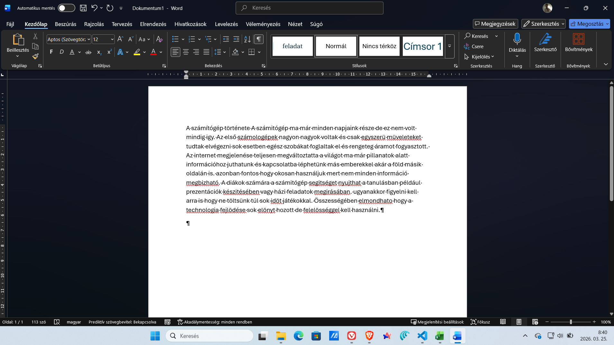
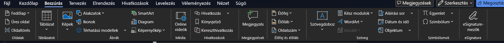
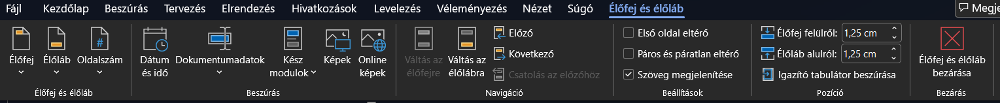
Tartalomjegyzék beszúrása
Önálló feladat
Az utolsó oldal után nyiss egy új oldalt a ctrl + Enter billentyűkombinációval! Az új oldal tetejére Címsor 1 stílussal írd fel, hogy Tartalomjegyzék, majd szúrj be egy automatikus tartalomjegyzéket!
Részletes leírás lépésenként
Új oldal beszúrása: ha új oldalt szeretnénk beszúrni, akkor nem érdemes entereket nyomogatni addig, amíg nem lesz egyszer csak egy új oldal. Ez megint nem kiszúrás, hanem így ez a rész akkor is új oldalon kezdődik, ha pl. beszúrsz még egy képet vagy módosítod az egész szöveg betűméretét.
Új oldalt a legegyszerűbben a ctrl + Enter billentyűkombinációval tudunk beszúrni. Ha nagyon szeretnéd, akkor kattintgatva is be lehet tenni egy töréspontot: ezeket az Elrendezés fülön találod a bal oldalon.
Tartalomjegyzék beszúrása: az új oldalre szúrj be egy automatikus tartalomjegyzéket! Ezt a Hivatkozások fülön találod. Kattints a Tartalom gombra, és válassz egy szimpatikus tartalomjegyzéket! Természetesen itt is használhatod a Keresés részt. Meg lehet adni kézzel is a tartalomjegyzék beállításait, itt, a menü alján. A részben ezen kívül van még egy fontos gomb, a Frissítés. Ezzel tudod frissíteni a tartalomjegyzéket, ha a dokumentumban változtattál a címsorokon vagy írtál még hozzá. A frissítésnél érdemes a Teljes tartalomjegyzék frissítése lehetőséget választani, mert így a címsorok szövege és az oldalszámok is frissülnek.
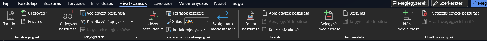
Egyéni tartalomjegyzék lehetőséget választva további beállításokat is megadhatsz.">
Lábjegyzet és a források megjelölése
Amikor más munkáját is felhasználjuk, fontos megjelölni ezeket a műveket. Ezzel magunkat is védjük, hiszen hivatkozni tudunk rá, hogy onnan szereztük az információinkat. Az interneten rengeteg olyan kép található, amelyek szabadon felhasználhatók, de ezeknél is fontos megjelölni, hogy ki készítette őket – kivétel persze, ha saját alkotást használunk.
Bár most nem erre haszáljuk, gyakran lábjegyzvetbe kerülnek az ilyen forrásmegjelölések. A mostani feladatban egy magyarázó részt fűzünk az egyik szóhoz.
Önálló feladat
A második oldalon keresd meg a biopamut kifejezést! Jelöld ki, majd ehhez a szóhoz szúrd be lábjegyzetként az itt található szöveget!
Egy hagyományos 150 grammos póló előállításhoz 8000 liter vizet használnak fel. Ugyanis ennyi vízre van szüksége a gyapotnak, melyből a pamutszál készül. Egy ugyanilyen típusú, de biopamutból készült póló esetében a vízfelhasználás kevesebb, mint 1000 liter víz.
Fizikai könyvek használatakor fel kell tüntetni a szerzőt, a címet, a kiadó nevét, a kiadás dátumát és a felahsznált oldalak számát. Ha online forrással dolgoztunk, akkor a teljes webcím mellett (amit a böngésző címsorából másolhatsz ki) fel kell tüntetni a letöltés dátumát is, hiszen az oldalt azóta szerkeszthették. Ha AI által generált tartalommal dolgoztunk, akkor a felhasznált AI eszközt is fel kell tüntetni. Fontos viszont, hogy ne ezekkel a részekkel próbáld alátámasztani az érveidet (pl. Magyarországon élnek jegesmedvék, mert az AI írta → ez rossz).
Részletes leírás lépésenként
Lábjegyzet beszúrása: a második oldalon a biopamut kifejezéshez szúrunk be egy magyarázó lábjegyzetet. Keresd meg ezt a szót! Ha nem szeretnéd végigolvasni, akkor a ctrl + f billentyűkombináció használatával megnyithatod a keresést. Ha ide beírod a keresett szót, majd entert nyomsz, a program kijelöli a talált szót (sorban egymás után, ha többször is előfordul).
Ha kijelölted a biopamut szót, akkor keresd meg a Hivatkozások fülön a Lábjegyzet beszúrása lehetőséget. Kattintás után a lap lajára kerülsz. Ide másold be a következő szöveget:
Egy hagyományos 150 grammos póló előállításhoz 8000 liter vizet használnak fel. Ugyanis ennyi vízre van szüksége a gyapotnak, melyből a pamutszál készül. Egy ugyanilyen típusú, de biopamutból készült póló esetében a vízfelhasználás kevesebb, mint 1000 liter víz.
A hivatkozás szabályai, forrásmegjelölés: a hivatkozások használatakor fontos, hogy pontosan be lehessen azonosítani a felhasznált forrást. Nem elég tehát olyan, hogy "tankönyv", "az internet" vagy "a chatGPT". Fizikai könyvek használatakor fel kell tüntetni a szerzőt, a címet, a kiadó nevét, a kiadás dátumát és a felahsznált oldalak számát. Ha online forrással dolgoztunk, akkor a teljes webcím mellett (amit a böngésző címsorából másolhatsz ki) fel kell tüntetni a letöltés dátumát is, hiszen az oldalt azóta szerkeszthették. Ha AI által generált tartalommal dolgoztunk, akkor a felhasznált AI eszközt is fel kell tüntetni. Fontos viszont, hogy ne ezekkel a részekkel próbáld alátámasztani az érveidet (pl. Magyarországon élnek jegesmedvék, mert az AI írta → ez rossz).
Képek beillesztése, kiemelés
Önálló feladat
Az első oldalra szúrd be a kuka.png képet! Méretezd arányosan 6 cm szélességűre, futtasd körül négyzetesen a szöveget, és helyezd a képet a lap tetején (az Egy átlagos család kezdetű bekezdéssel egy vonalba) a jobb oldalra! A kép alá illeszd be a minta szerint az A háztartási hulladék összetétele Magyarországon képaláírást!
A Hulladékpiramis című rész mellé szúrd be a hulladékpiramis.png képet! Méretezd arányosan 5 cm magasra, futtasd körül a szöveget négyzetesen, igazítsd a lap jobb oldalára és adj hozzá egy vékony fekete szegélyt!
Részletes leírás lépésenként
Kép beillesztése az első oldalra, méretezés és elhelyezés: a letöltött képeket is többféleképpen lehet beilleszteni. Talán a legegyszerűbb, ha megnyitod a Fájlkezelőt (ez elvileg úgyis nyitva van a forrsásszöveg miatt), rákattintasz egyszer a képre, és behúzod a Word-dokumentumba. Most keresd ki a kuka.png képet, és illeszd be az első oldalra. Ha ez a módszer nem szimpatikus, akkor persze használhatod a Beszúrás fül Képek lehetőségén belül az Ez az eszköz pontot. Ekkor ki kell keresni a felugró párbeszédablakban a képet.
Ha duplán a képre kattintasz, a program a Képformátum menüre ugrik. Itt a jobb szélen találod a kép méretezési lehetőségeit. Válaszd ki a szélességet, és írd be, hogy 6 cm! Itt most elhagyhatod a mértékegységet is.
Ha a képre kattintasz, a jobb oldalán fent megjelenik egy kis kék ikon, ez a Szöveg körbefuttatása: . Kattints erre, és válaszd ki a második sor első elemét, a Négyzetes lehetőséget! Ha ezt megcsináltad, a program engedi, hogy a képet (relatíve) szabadon mozgasd. Húzd fel az Egy átlagos család kezdetű bekezdéssel egy vonalba, és igazítsd a lap jobb széléhez! Zöld segédvonalak segítenek a pontos elhelyezésben.
Képaláírás beillesztése: képaláírást a lábjegyzethez nagyon hasonlóan lehet beilleszteni. A Hivatkozások fülön találod a Felirat beszúrása lehetőséget. A megjelenő párbeszédablakban beírhatod a képaláírást. Ha ki szeretnéd törölni az automatikus részt (pl. 1. ábra), azt csak a párbeszédablak bezárása után tudod megtenni. Írd be a képaláírást: A háztartási hulladék összetétele Magyarországon!
Kép beillesztése a Hulladékpiramis cím mellé: keresd meg a Hulladékpiramis címet, és szúrd be a hulladékpiramis.png képet a mellé. Állítsd a magasságát (igen, itt most nem a szélességet, hanem a magasságot állítjuk fixre) 5 cm-re! Állítsd be itt is a szöveg négyzetes körbefuttatását!
Vékony szegély beállítása: a képet kijelölve a Képformátum menüben a Képszegély lehetőséget válaszd ki! Állíts be egy vékony fekete folytonos vonalat szegélynek!
Felirat beszúrása lehetőséget. Képek mellett táblázatokhoz is ezzel adhatsz magyarázó szöveget.">
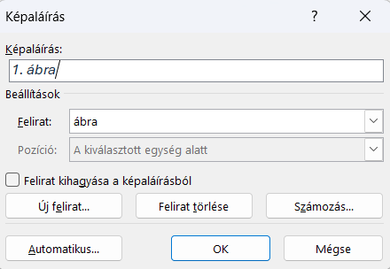
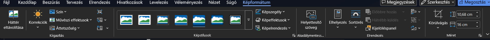
Képszegély lehetőséget kiválasztva tudod beállítani a kép szegélyét. A szegély vastagságát, színét és stílusát is megadhatod.">